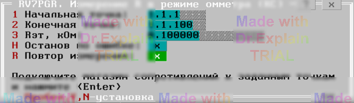

4.4 RV7PGR. Измерение R в режиме омметра (КС)
Утилита определяет погрешность измерения сопротивления вольтметром в режиме омметра.
Предоставляется меню (см. рисунок 1).

- Начальная точка — вход АСК для подключения «+» эталонного сопротивления;
- Конечная точка — вход АСК для подключения «−» эталонного сопротивления;
- Rэт, Ом — значение эталонного сопротивления.
После ввода параметров меню автоматически выполняются следующие действия:
- Подключить «Начальную точку» к шине A1.
- Подключить «Конечную точку» к шине B1.
- Настроить вольтметр в режим омметра и подключить его к шинам A1,B1.
- Выполнить измерение сопротивления.
В протокол выполнения выводятся сообщения вида:
$TST1 Rд.б=100 Ом±5 Ом (5.00%) Rизм=100.00 Ом Погр=0.000 Ом
$TST1 Измерений:1 Все норма ПОГРmin=0 ПОГРmax=+0.000 Ом
По окончании теста отображается итоговое меню (см. пункт 6.3).